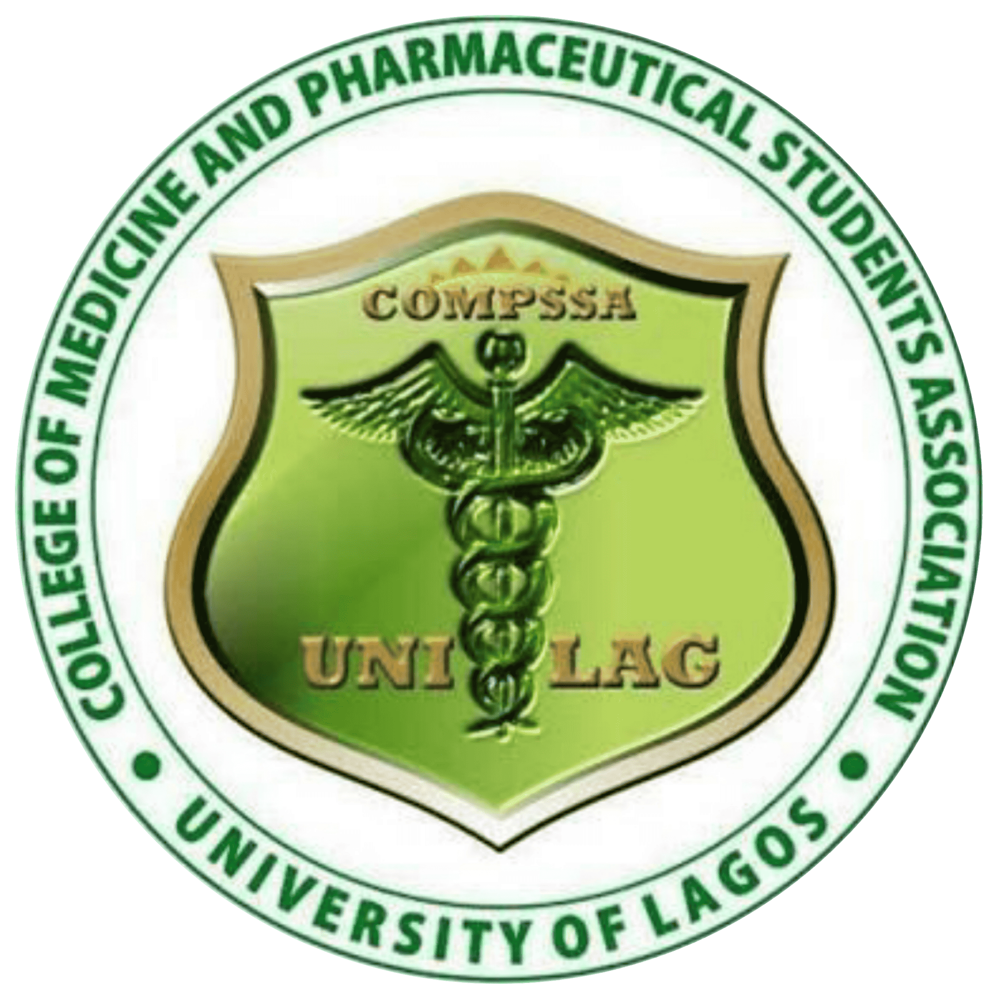
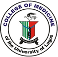
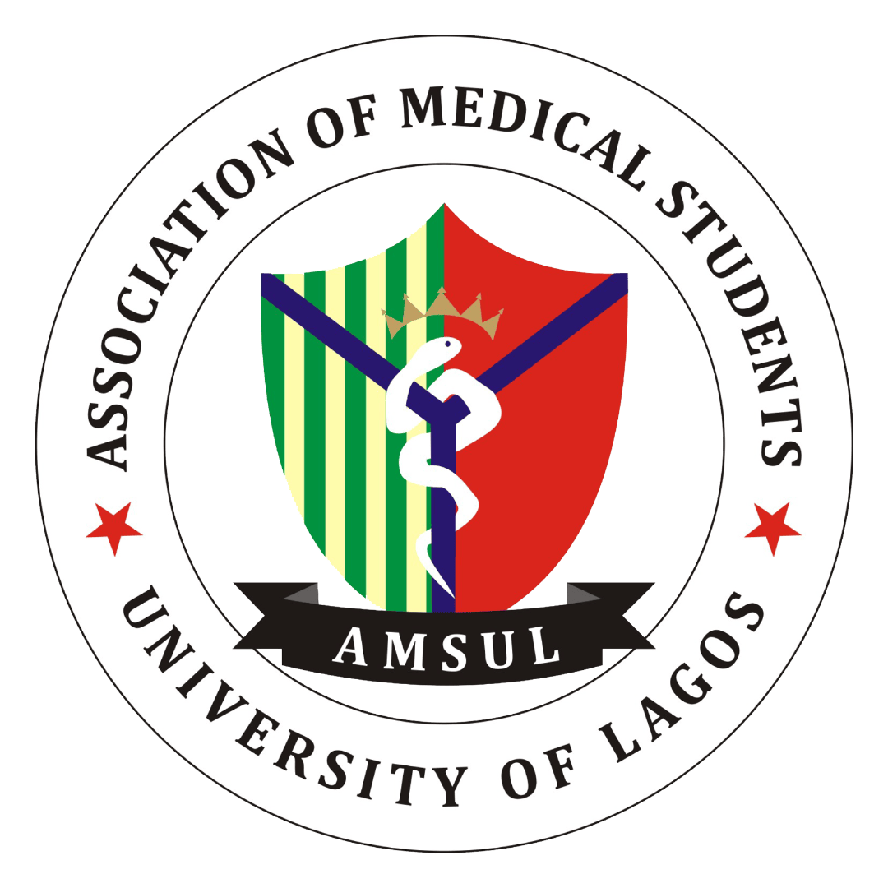

Track records

COMPSSA
General Secretary, COMPSSA (2023 - Present)
COMPSSA
Chairman of the COMPSSA Internal and External Committee (2020/2021)

CMUL
Member of the Library Committee, College of Medicine, University of Lagos (2021/2022)

AMSUL
Member the Budget and Planning Committee in the Association of Medical Students University of Lagos (2018/2019)